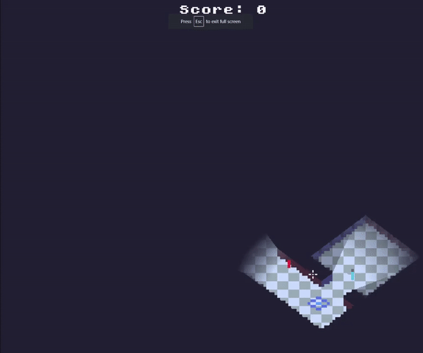
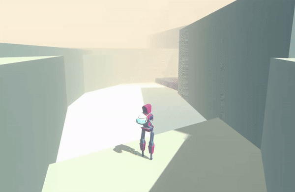

A top down shooter with a horror twist. This is a challenging endless shooter, where you have to traverse a zombie infested facility, cloaked in a pitch black darkness.
You score points by moving from one rally pint to another, however you have to take down and avoid the zombies chasing after you.
Your equipped with a handy gun that can quickly take down the enemies, but also a large sum of flares that are used to temporarily light up the hallways,
crating an interesting combat dynamic.
In addition to the zombies there is also a slow yet tanky shadowy figure that periodically haunts the place, phasing through the walls, to get you at the most inconvenient of times .
I consider this to be one of my more well designed games, also being one of the most recent that I've published online.
It was a great learning tool to get me used to the godot engine more. I made this game in a few days during the 2022.2 Brakeys game jam.
it ranked 207 overall and 126 for game design and 146 for fun which I'm quite proud of considering the over 1000 entries.
You can find it here.


Recall is a very short puzzle game, where you must navigate through an abandoned facility, solving puzzles throughout.
you play as an unnamed robot that lost its arms many moons ago, meaning you can interact with many objects in traditional ways.
To help you with you efforts of escaping you uncover a lost robot called buddy, who unfortunately lost his legs, from a bolder dropping down.
With your ability to run and hop around, you help buddy get around, whilst he aids in holding buttons down and opening doors and pathways for you.
This game was made for a week long Brakeys game jam, where i used a few days of it to program some puzzle platformer mechanics,
that could be used by a level designer to create some interesting puzzles and platforming moments for the game. This included the basics such as buttons and doors,
but also batteries that are pushed around, providing power for different devices or to be used as a platform that the player can rearrange.
I additionally model and rigged robot character for the player, however i never got time to animating it.
You can find it here.